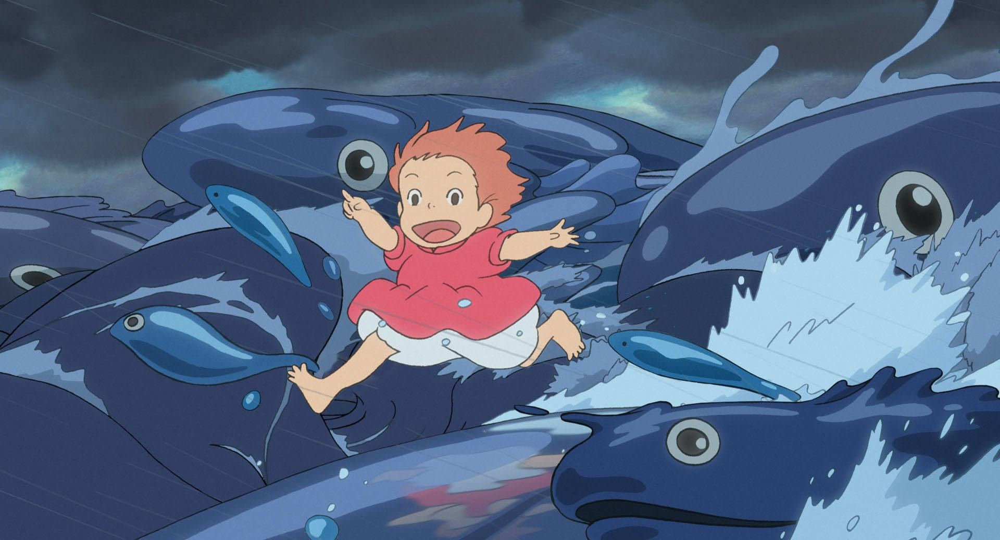

崖上的波妞
崖の上のポニョ
大海中一隻小金魚偷偷離開她的家，乘著水母來到外界的世界，卻不慎卡在海洋垃圾裡的玻璃罐內，這時救了她的是一個小男孩「宗介」。
宗介將金魚救出後把她取名為「波妞」，並決心要保護她。 喜歡上宗介的波妞，開始想要變成人類。
大海中一隻小金魚偷偷離開她的家，乘著水母來到外界的世界，卻不慎卡在海洋垃圾裡的玻璃罐內，這時救了她的是一個小男孩「宗介」。
宗介將金魚救出後把她取名為「波妞」，並決心要保護她。 喜歡上宗介的波妞，開始想要變成人類。